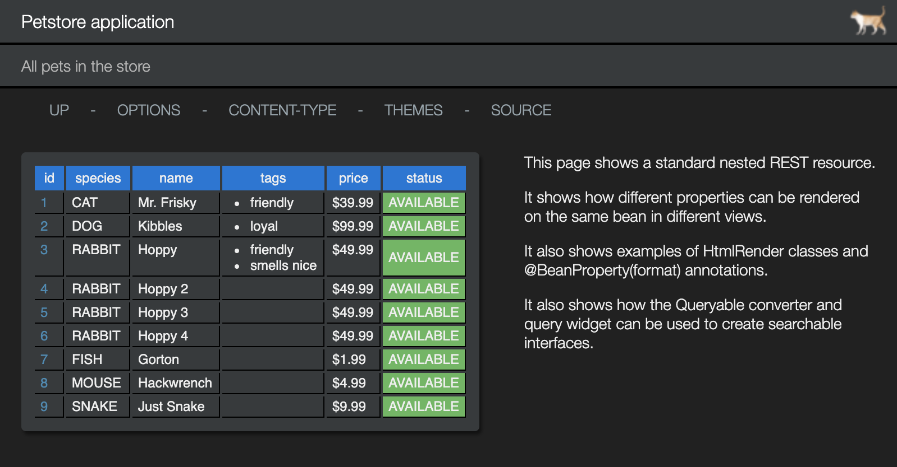
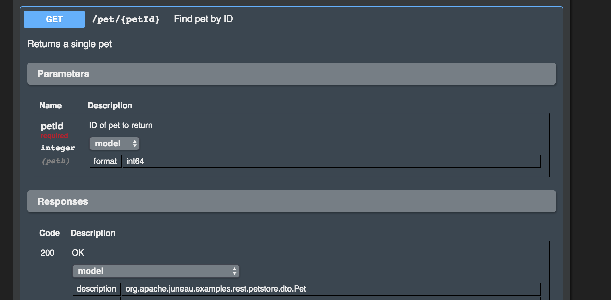

<!--
/***************************************************************************************************************************
 * Licensed to the Apache Software Foundation (ASF) under one or more contributor license agreements.  See the NOTICE file
 * distributed with this work for additional information regarding copyright ownership.  The ASF licenses this file
 * to you under the Apache License, Version 2.0 (the "License"); you may not use this file except in compliance
 * with the License.  You may obtain a copy of the License at
 *  
 *  http://www.apache.org/licenses/LICENSE-2.0
 *  
 * Unless required by applicable law or agreed to in writing, software distributed under the License is distributed on an
 * "AS IS" BASIS, WITHOUT WARRANTIES OR CONDITIONS OF ANY KIND, either express or implied.  See the License for the
 * specific language governing permissions and limitations under the License.
 ***************************************************************************************************************************/
 -->

{title:'juneau-petstore-server', created:'9.0.0'}

<div class='topic'>
	<p>
		The <c>juneau-petstore-server</c> module contains all of the guts of the application.  It's a standard Spring Boot
		application with Juneau integration support.  For brevity, the app and configuration classes are combined into
		the following:
	</p>
	
	<h5 class='figure'>App.java</h5>
	<p class='bcode w800'>
		|	<ja>@SpringBootApplication</ja>
		|	<ja>@EnableJpaRepositories</ja>(basePackages=<js>"org.apache.juneau.petstore"</js>)
		|	<ja>@EnableCaching</ja>
		|	<ja>@Controller</ja>
		|	<jk>public class</jk> App {
		|	
		|		<jc>//-----------------------------------------------------------------------------------------------------------------
		|		// App
		|		//-----------------------------------------------------------------------------------------------------------------</jc>
		|	
		|		<jk>public static void</jk> main(String[] <jv>args</jv>) {
		|			<jk>try</jk> {
		|				<jk>new</jk> SpringApplicationBuilder(App.<jk>class</jk>).run(<jv>args</jv>);
		|			} <jk>catch</jk> (Exception <jv>e</jv>) {
		|				<jv>e</jv>.printStackTrace();
		|			}
		|		}
		|	
		|		<jc>//-----------------------------------------------------------------------------------------------------------------
		|		// Beans
		|		//-----------------------------------------------------------------------------------------------------------------</jc>
		|	
		|		<ja>@Bean</ja>
		|		<jk>public</jk> PetStoreService petStoreService() {
		|			<jk>return new</jk> PetStoreService();
		|		}
		|	
		|		<ja>@Bean</ja>
		|		<jk>public</jk> RootResources rootResources() {
		|			<jk>return new</jk> RootResources();
		|		}
		|	
		|		<ja>@Bean</ja>
		|		<jk>public</jk> PetStoreResource petStoreResource() {
		|			<jk>return new</jk> PetStoreResource();
		|		}
		|	
		|		<ja>@Bean</ja>
		|		<jk>public</jk> ServletRegistrationBean<Servlet> getRootServlet(RootResources <jv>rootResources</jv>) {
		|			<jk>return new</jk> ServletRegistrationBean&lt;&gt;(<jv>rootResources</jv>, <js>"/*"</js>);
		|		}
		|	}
	</p>
	<p>
		Notice how cleanly Juneau servlets fit into Spring Boot.  No special initializers are required
		to integrate Juneau with Spring Boot.
	</p>
	
	<p>
		The <c>RootResources</c> class is the top-level entry point into the REST API.  It allows us to group
		child resources.  In our case though we only have one child resource...<c>PetStoreResource</c>:
	</p>

	<h5 class='figure'>RootResources.java</h5>
	<p class='bcode w800'>
		|	<ja>@Rest</ja>(
		|		path=<js>"/*"</js>,
		|		title=<js>"Root resources"</js>,
		|		description=<js>"Example of a router resource page."</js>,
		|		children={
		|			PetStoreResource.<jk>class</jk>
		|		}
		|	)
		|	<ja>@HtmlDocConfig</ja>(
		|		widgets={
		|			ContentTypeMenuItem.<jk>class</jk>
		|		},
		|		navlinks={
		|			<js>"options: ?method=OPTIONS"</js>,
		|			<js>"$W{ContentTypeMenuItem}"</js>,
		|			<js>"source: $C{Source/gitHub}/org/apache/juneau/petstore/rest/$R{servletClassSimple}.java"</js>
		|		},
		|		aside={
		|			<js>"&lt;div style='max-width:400px' class='text'&gt;"</js>,
		|			<js>"	&lt;p&gt;This is an example of a 'router' page that serves as a jumping-off point to child resources.&lt;/p&gt;"</js>,
		|			<js>"	&lt;p&gt;Resources can be nested arbitrarily deep through router pages.&lt;/p&gt;"</js>,
		|			<js>"	&lt;p&gt;Note the &lt;span class='link'&gt;options&lt;/span&gt; link provided that lets you see the generated swagger doc for this page.&lt;/p&gt;"</js>,
		|			<js>"	&lt;p&gt;Also note the &lt;span class='link'&gt;sources&lt;/span&gt; link on these pages to view the source code for the page.&lt;/p&gt;"</js>,
		|			<js>"	&lt;p&gt;All content on pages in the UI are serialized POJOs.  In this case, it's a serialized array of beans with 2 properties, 'name' and 'description'.&lt;/p&gt;"</js>,
		|			<js>"	&lt;p&gt;Other features (such as this aside) are added through annotations.&lt;/p&gt;"</js>,
		|			<js>"&lt;/div&gt;"</js>
		|		}
		|	)
		|	<jk>public class</jk> RootResources <jk>extends</jk> BasicSpringRestServletGroup {
		|		<jk>private static final long</jk> <jsf>serialVersionUID</jsf> = 1L;
		|	}
	</p>
	<p>
		By extending from <c>BasicSpringRestServletGroup</c>, the root servlet hooks into the injection framework of Spring
		to resolve spring beans such as the child resource <c>PetStoreResource</c>.
	</p>
	<p>
		This page renders as follows:
	</p>
	
	<p class='bcode w800'>
		|	http://localhost:5000
	</p>			
	
	
	<p>
		The <c>PetStoreResource</c> class is the REST implementation of our <c>PetStore</c> interface.  
	</p>
	
	<h5 class='figure'>PetStoreResource.java</h5>
	<p class='bcode w800'>
		|	<ja>@Rest</ja>(
		|		path=<js>"/petstore"</js>,
		|		title=<js>"Petstore application"</js>,
		|		description={
		|			<js>"This is a sample server Petstore server based on the Petstore sample at Swagger.io."</js>,
		|			<js>"You can find out more about Swagger at http://swagger.io."</js>,
		|		},
		|		swagger=<ja>@Swagger</ja>(
		|			version=<js>"1.0.0"</js>,
		|			title=<js>"Swagger Petstore"</js>,
		|			termsOfService=<js>"You are on your own."</js>,
		|			contact=<ja>@Contact</ja>(
		|				name=<js>"Juneau Development Team"</js>,
		|				email=<js>"dev@juneau.apache.org"</js>,
		|				url=<js>"http://juneau.apache.org"</js>
		|			),
		|			license=<ja>@License</ja>(
		|				name=<js>"Apache 2.0"</js>,
		|				url=<js>"http://www.apache.org/licenses/LICENSE-2.0.html"</js>
		|			),
		|			externalDocs=<ja>@ExternalDocs</ja>(
		|				description=<js>"Find out more about Juneau"</js>,
		|				url=<js>"http://juneau.apache.org"</js>
		|			),
		|			tags={
		|				<ja>@Tag</ja>(
		|					name=<js>"pet"</js>,
		|					description=<js>"Everything about your Pets"</js>,
		|					externalDocs=<ja>@ExternalDocs</ja>(
		|						description=<js>"Find out more"</js>,
		|						url=<js>"http://juneau.apache.org"</js>
		|					)
		|				),
		|				<ja>@Tag</ja>(
		|					name=<js>"store"</js>,
		|					description=<js>"Access to Petstore orders"</js>
		|				),
		|				<ja>@Tag</ja>(
		|					name=<js>"user"</js>,
		|					description=<js>"Operations about user"</js>,
		|					externalDocs=<ja>@ExternalDocs</ja>(
		|						description=<js>"Find out more about our store"</js>,
		|						url=<js>"http://juneau.apache.org"</js>
		|					)
		|				)
		|			}
		|		),
		|		staticFiles={<js>"htdocs:/htdocs"</js>} 
		|	)
		|	<ja>@HtmlDocConfig</ja>(
		|		widgets={
		|			ContentTypeMenuItem.<jk>class</jk>,
		|		},
		|		navlinks={
		|			<js>"up: request:/.."</js>,
		|			<js>"options: servlet:/?method=OPTIONS"</js>,
		|			<js>"$W{ContentTypeMenuItem}"</js>,
		|			<js>"source: $C{Source/gitHub}/org/apache/juneau/petstore/rest/$R{servletClassSimple}.java"</js>
		|		},
		|		head={
		|			<js>"&lt;link rel='icon' href='$U{servlet:/htdocs/cat.png}'/&gt;"</js>  <jc>// Add a cat icon to the page.</jc>
		|		},
		|		header={
		|			<js>"&lt;h1&gt;$R{resourceTitle}&lt;/h1&gt;"</js>,
		|			<js>"&lt;h2&gt;$R{methodSummary}&lt;/h2&gt;"</js>,
		|			<js>"$C{PetStore/headerImage}"</js>
		|		},
		|		aside={
		|			<js>"&lt;div style='max-width:400px' class='text'&gt;"</js>,
		|			<js>"	&lt;p&gt;This page shows a standard nested REST resource.&lt;/p&gt;"</js>,
		|			<js>"	&lt;p&gt;It shows how different properties can be rendered on the same bean in different views.&lt;/p&gt;"</js>,
		|			<js>"	&lt;p&gt;It also shows examples of HtmlRender classes and @BeanProperty(format) annotations.&lt;/p&gt;"</js>,
		|			<js>"	&lt;p&gt;It also shows how the Queryable converter and query widget can be used to create searchable interfaces.&lt;/p&gt;"</js>,
		|			<js>"&lt;/div&gt;"</js>
		|		},
		|		stylesheet=<js>"servlet:/htdocs/themes/dark.css"</js>  <jc>// Use dark theme by default.</jc>
		|	)
		|	<jk>public class</jk> PetStoreResource <jk>extends</jk> BasicRestObject <jk>implements</jk> PetStore {
		|	
		|		<ja>@Autowired</ja>
		|		<jk>private</jk> PetStoreService <jf>store</jf>;
		|	
		|		<jd>/**
		|		 * Navigation page
		|		 *
		|		 * @return Navigation page contents.
		|		 */</jd>
		|		<ja>@RestGet</ja>(
		|			path=<js>"/"</js>,
		|			summary=<js>"Navigation page"</js>
		|		)
		|		<ja>@HtmlDocConfig</ja>(
		|			style={
		|				<js>"INHERIT"</js>,  <jc>// Flag for inheriting resource-level CSS.</jc>
		|				<js>"body { "</js>,
		|					<js>"background-image: url('petstore/htdocs/background.jpg'); "</js>,
		|					<js>"background-color: black; "</js>,
		|					<js>"background-size: cover; "</js>,
		|					<js>"background-attachment: fixed; "</js>,
		|				<js>"}"</js>
		|			}
		|		)
		|		<jk>public</jk> ResourceDescriptions getTopPage() {
		|			<jk>return new</jk> ResourceDescriptions()
		|				.append(<js>"pet"</js>, <js>"All pets in the store"</js>)
		|				.append(<js>"store"</js>, <js>"Orders and inventory"</js>)
		|				.append(<js>"user"</js>, <js>"Petstore users"</js>)
		|			;
		|		}
		|		
		|		...
	</p>		
	<p>
		Clicking the <c>petstore</c> link on the root page takes you to our PetStore resource:
	</p>
	<p class='bcode w800'>
		|	http://localhost:5000/petstore
	</p>			
	

	<p>
		The methods defined in our <c>PetStore</c> interface are implemented like so:
	</p>		
	<h5 class='figure'>PetStoreResource.java</h5>
	<p class='bcode w800'>
		|	<ja>@Override</ja> <jc>/* PetStore */</jc>
		|	<ja>@RestGet</ja>(
		|		path=<js>"/pet"</js>,
		|		summary=<js>"All pets in the store"</js>,
		|		swagger=<ja>@OpSwagger</ja>(
		|			tags=<js>"pet"</js>,
		|			parameters={
		|				Queryable.<jsf>SWAGGER_PARAMS</jsf>  <jc>// Documents searching.</jc>
		|			}
		|		),
		|		converters={Queryable.<jk>class</jk>}  <jc>// Searching support.</jc>
		|	)
		|	<ja>@Bean</ja>(on=<js>"Pet"</js>, excludeProperties=<js>"tags,photo"</js>)  <jc>// In this view, don't serialize tags/photos properties.</jc>
		|	<jk>public</jk> Collection&lt;Pet&gt; getPets() <jk>throws</jk> NotAcceptable {
		|		<jk>return</jk> <jf>store</jf>.getPets();
		|	}
		|	
		|	<ja>@Override</ja> <jc>/* PetStore */</jc>
		|	<ja>@RestGet</ja>(
		|		path=<js>"/pet/{petId}"</js>,
		|		summary=<js>"Find pet by ID"</js>,
		|		description=<js>"Returns a single pet"</js>,
		|		swagger=<ja>@OpSwagger</ja>(
		|			tags=<js>"pet"</js>
		|		)
		|	)
		|	<jk>public</jk> Pet getPet(<jk>long</jk> <jv>petId</jv>) <jk>throws</jk> IdNotFound, NotAcceptable {
		|		<jk>return</jk> <jf>store</jf>.getPet(<jv>petId</jv>);
		|	}
		|	
		|	<ja>@Override</ja> <jc>/* PetStore */</jc>
		|	<ja>@RestPost</ja>(
		|		path=<js>"/pet"</js>,
		|		summary=<js>"Add a new pet to the store"</js>,
		|		swagger=<ja>@OpSwagger</ja>(
		|			tags=<js>"pet"</js>
		|		),
		|		roleGuard=<js>"ROLE_ADMIN || (ROLE_USER &amp;&amp; ROLE_WRITABLE)"</js>  <jc>// Restrict access to this method.</jc>
		|	)
		|	<jk>public long</jk> createPet(CreatePet <jv>pet</jv>) <jk>throws</jk> IdConflict, NotAcceptable, UnsupportedMediaType {
		|		<jk>return</jk> <jf>store</jf>.create(<jv>pet</jv>).getId();
		|	}
		|	
		|	...
	</p>		
	<p>
		After running the <c>Main</c> method in the client code to populate the database, the page renders as follows:
	</p>
	<p class='bcode w800'>
		|	http://localhost:5000/petstore/pet
	</p>			
	

	<p>
		The <l>OPTIONS</l> menu items takes you to the auto-generated Swagger UI for the application:
	</p>
	<p class='bcode w900'>
		|	http://localhost:10000/petstore/pet?method=OPTIONS
	</p>			
	
	<p>
		Since we've defined tags on our annotations, the pet-related operations are all grouped under the <l>pet</l> tag:
	</p>
	
	<p>
		Information for all HTTP parts is automatically generated:
	</p>
	
	<p>
		The schema models for POJO models is available in the <l>Responses</l> section of an operation:
	</p>
	
	<p>
		Auto-generated examples are available for all supported languages:
	</p>
	
	<p>
		For example, <l>application/json5</l>:
	</p>
	
	<p>
		Examples can be derived in a number of ways.  In our case, we've defined a static method on our <l>Pet</l>
		class annotated with <ja>@Example</ja>:
	</p>
	<h5 class='figure'>Pet.java</h5>
	<p class='bcode w800'>
		|	<ja>@Example</ja>
		|	<jk>public static</jk> Pet example() {
		|		<jk>return new</jk> Pet()
		|			.id(123)
		|			.species(Species.<jsf>DOG</jsf>)
		|			.name(<js>"Doggie"</js>)
		|			.tags(<js>"friendly"</js>,<js>"smart"</js>)
		|			.status(PetStatus.<jsf>AVAILABLE</jsf>);
		|	}
	</p>
	<p>
		Similar functionality exists for request bodies as well:
	</p>
	
	<p>
		At the bottom of the page is a listing of the POJO models in the app:
	</p>
	
	
</div>